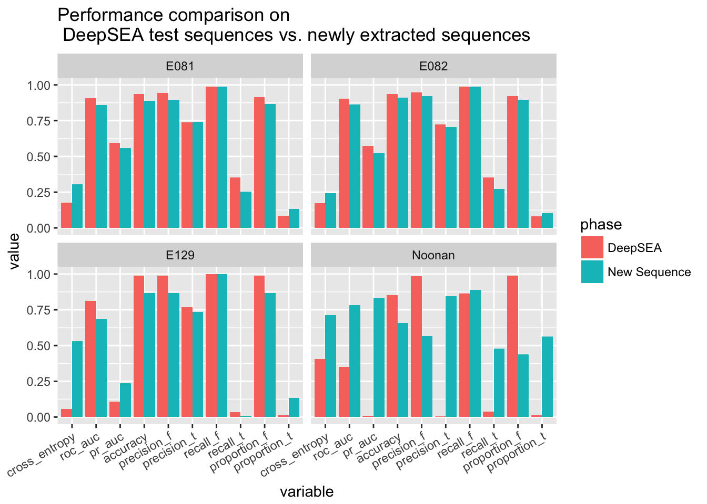

Here we check the performance of the classifier (the doc for training is here) on the sequence close to peaks in the new data sets. Note that the training is done on the basis of sequences from DeepSEA only. The procedure of extracting sequences near the peaks is described here.
The working directory is /project2/xinhe/yanyul/deep_variant/yanyu/deep_brain.
This step is done using scripts as follow:
$ ls test/040917_binize_datasets/*sbatch
test/040917_binize_datasets/feature_E081.sbatch test/040917_binize_datasets/feature_E129.sbatch
test/040917_binize_datasets/feature_E082.sbatch test/040917_binize_datasets/feature_Noonan.sbatchThey generate feature representation of the input sequences.
$ python my_scripts/4_feature2output.py test/040917_binize_datasets/E081.txt_out/E081-DNase.macs2.narrowPeak_bin200.bed.sorted.merged.final.expended_keras_deepsea_12.hdf5 my_train/040417_overnight/2/42-0.1703-0.1520.hdf5 feature test/040917_binize_datasets/E081.txt_out/
Using Theano backend.
5192704/5194326 [============================>.] - ETA: 0s
$ python my_scripts/4_feature2output.py test/040917_binize_datasets/E082.txt_out/E082-DNase.macs2.narrowPeak_bin200.bed.sorted.merged.final.expended_keras_deepsea_12.hdf5 my_train/040417_overnight/2/42-0.1703-0.1520.hdf5 feature test/040917_binize_datasets/E082.txt_out/
Using Theano backend.
5783712/5787158 [============================>.] - ETA: 0s
$ python my_scripts/4_feature2output.py test/040917_binize_datasets/E129.txt_out/E129-H3K9me3.narrowPeak_bin200.bed.sorted.merged.final.expended_keras_deepsea_12.hdf5 my_train/040417_overnight/2/42-0.1703-0.1520.hdf5 feature test/040917_binize_datasets/E129.txt_out/
Using Theano backend.
2717056/2723350 [============================>.] - ETA: 0s
$ python my_scripts/4_feature2output.py test/040917_binize_datasets/Noonan.txt_out/Noonan_union.bed_bin200.bed.sorted.merged.final.expended_keras_deepsea_12.hdf5 my_train/040417_overnight/2/42-0.1703-0.1520.hdf5 feature test/040917_binize_datasets/Noonan.txt_out/
Using Theano backend.
2602144/2617412 [============================>.] - ETA: 0s$ python my_scripts/evaluate_performance_from_y_y_pred.py test/040917_binize_datasets/E081.txt_out/label.hdf5 test/040917_binize_datasets/E081.txt_out/E081-DNase.macs2.narrowPeak_bin200.bed.sorted.merged.final.expended_keras_deepsea_12_42-0.1703-0.1520_pred.hdf5 data/E081-DNase.macs2.narrowPeak.sorted.intersect y_pred 0 0 test/040917_binize_datasets/E081.txt_out/ evaluate_E081 --remove_y_row 1073109-1073114
$ python my_scripts/evaluate_performance_from_y_y_pred.py test/040917_binize_datasets/E082.txt_out/label.hdf5 test/040917_binize_datasets/E082.txt_out/E082-DNase.macs2.narrowPeak_bin200.bed.sorted.merged.final.expended_keras_deepsea_12_42-0.1703-0.1520_pred.hdf5 data/E082-DNase.macs2.narrowPeak.sorted.intersect y_pred 0 1 test/040917_binize_datasets/E082.txt_out/ evaluate_E082 --remove_y_row 1238543-1238548
$ python my_scripts/evaluate_performance_from_y_y_pred.py test/040917_binize_datasets/E129.txt_out/label.hdf5 test/040917_binize_datasets/E129.txt_out/E129-H3K9me3.narrowPeak_bin200.bed.sorted.merged.final.expended_keras_deepsea_12_42-0.1703-0.1520_pred.hdf5 data/E129-H3K9me3.narrowPeak.sorted.intersect y_pred 0 2 test/040917_binize_datasets/E129.txt_out/ evaluate_E129
$ python my_scripts/evaluate_performance_from_y_y_pred.py test/040917_binize_datasets/Noonan.txt_out/label.hdf5 test/040917_binize_datasets/Noonan.txt_out/Noonan_union.bed_bin200.bed.sorted.merged.final.expended_keras_deepsea_12_42-0.1703-0.1520_pred.hdf5 data/Noonan_union.bed.sorted.intersect y_pred 0 3 test/040917_binize_datasets/Noonan.txt_out/ evaluate_Noonanlibrary(reshape2)
scores <- read.table('../data/best_model_type1_scores.txt', sep = '\t', header = T)
scores$phase <- rep('DeepSEA', nrow(scores))
filenames = c('E081', 'E082', 'E129', 'Noonan')
for(i in filenames){
temp <- read.table(paste('../data/evaluate_', paste(i, 'txt', sep = '.'), sep = ''), sep = '\t', header = T)
temp$epoch <- -1
temp$repeatID <- -1
temp$phase <- 'New Sequence'
temp$data <- i
scores <- rbind(scores, temp)
}
scores.melted <- melt(scores, id.vars = c('epoch', 'repeatID', 'data', 'phase'))
ggplot(scores.melted) + geom_bar(aes(x = variable, y = value, fill = phase), stat='identity', position='dodge') + facet_wrap(~data) + theme(axis.text.x = element_text(angle = 30, hjust = 1)) + ggtitle('Performance comparison on \n DeepSEA test sequences vs. newly extracted sequences')
Due to the extraction procedure, the new sequences are not very imbalanced but they are still imbalanced. In terms of ROC AUC, the performace on new sequences is little bit worse than the performance on DeepSEA sequences, but the difference is not very big. This indicates that the model trained with DeepSEA sequences generalizes well. Note that the set of newly extracted sequences is somewhat a hard sequence set, because we only include the sequence that are close to the peak (in particular, the farthest sequences just miss the peak and all other sequences may overlap with the peak even if their label is false). Therefore, the model trained generalizes well.
Note that the performance of the prediction of Noonan H3K27ac mark even improves when testing with newly extracted data even if the evaluations based on hard threshold decrease. This implies that the previous bad performance may due to biased data.